Classification I
This week we worked on Classifications. We shall focus on Different sensors; Test, Train and Validation of datasets; regression tree followed by few observations from the designed practical.
Different sensors
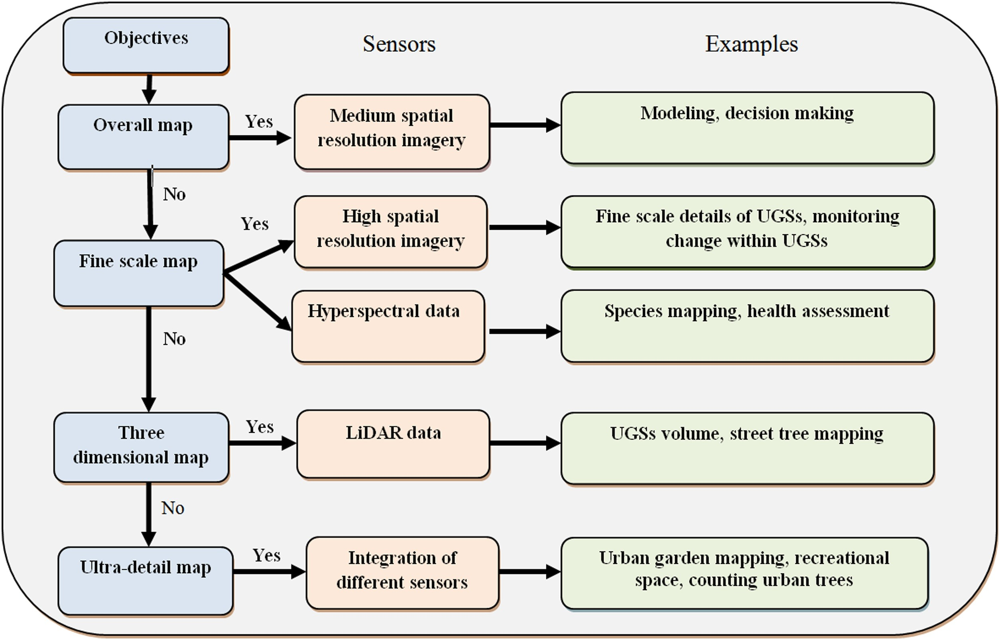
Test, Train, Validate
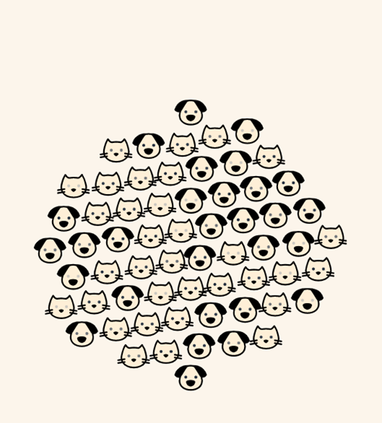
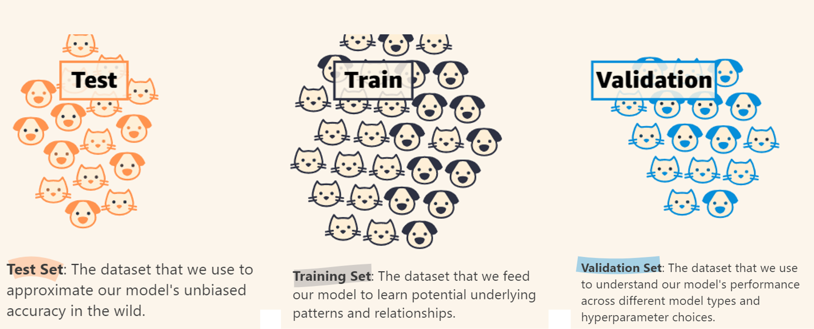
Below indicated Understanding Based on mlu-explain
Goal:
- Train the data to determine cat or dog
Data set
- types: 2 types of animals
- features: weight and fluffiness
Using?
- supervised machine learning
How?
- split data into three
- training set
- Testing set
- Validation set
- How should the train it?
- Use an appropriate model
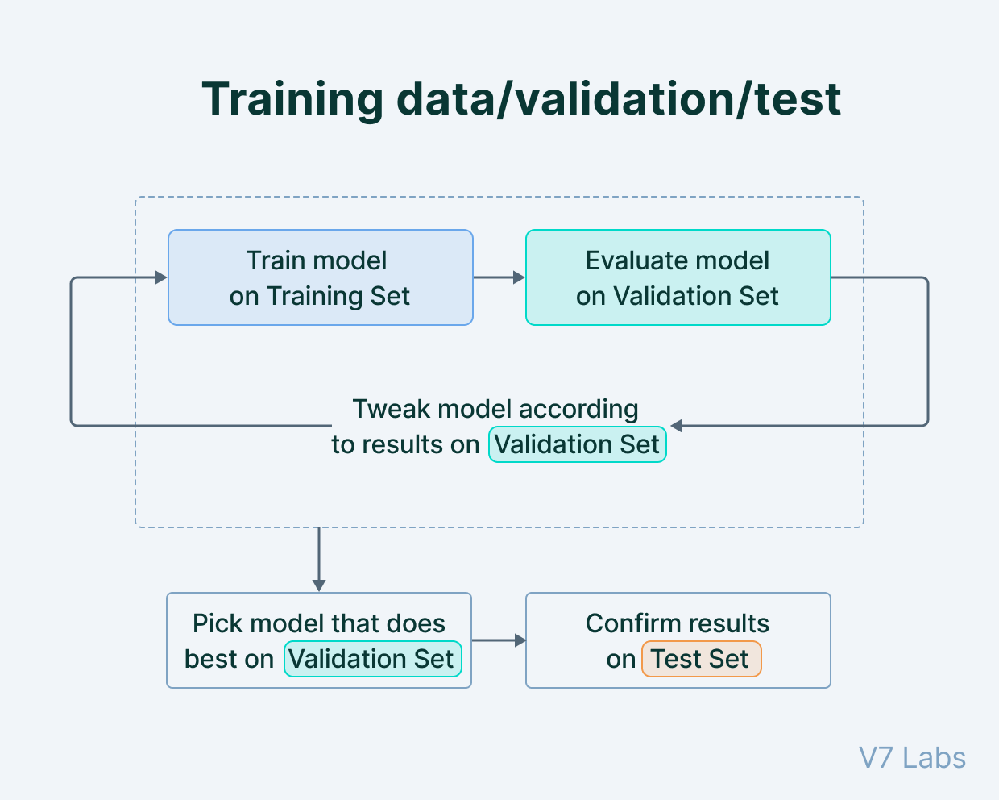
| Test | Train | Validation |
|---|---|---|
|
|
chooses: best hyper-parameters + best model for the task - LR and neural networks
|
Helpful Videos: 📹
Regression tree
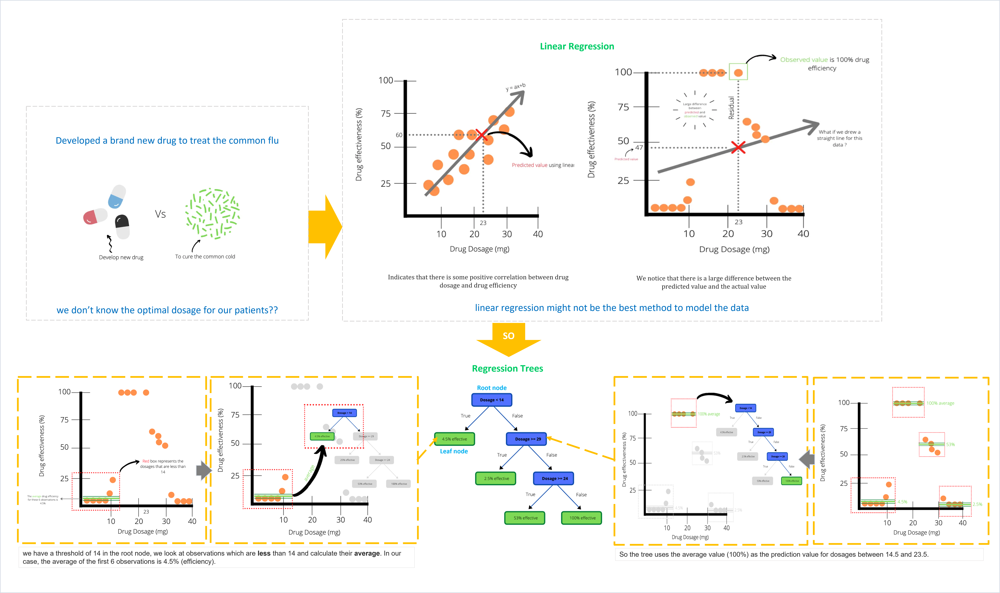
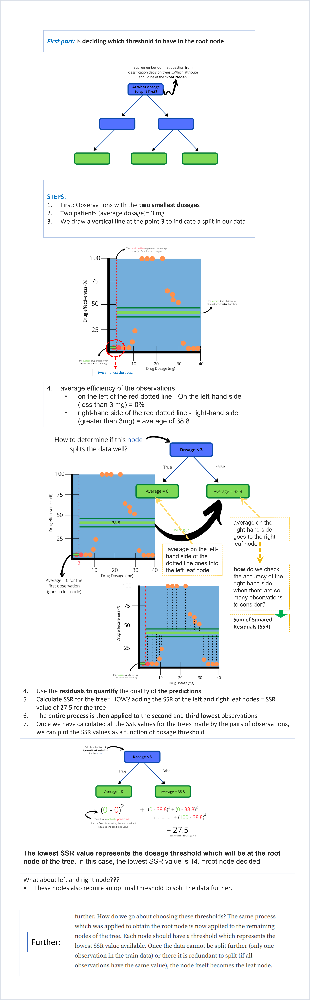
Application
Friedl and Brodley (1997)
Concern: - parametric supervised classification algorithms - unsupervised classification algorithms
Sharma, Ghosh, and Joshi (2013)
Geographical Location: Surat, Gujarat (India)
Area: 386.28 km2
Data source:
Classification technique: 3 classification methods
ISODATA (Iterative Self-Organizing Data Analysis) Clustering,
MLC
DTC (to map out 6 classes based on classification scheme)
Classification scheme:
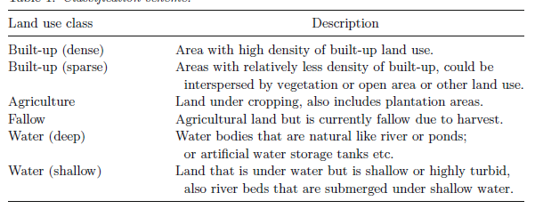
Classification scheme ISODATA
- Satellite data clustering (using ISODATA)
- 50 classes (6 iterations)
- 0.95 convergence threshold
- clusters >> 1 of the 6 land use categories identified (above image)>> merged >> unsupervised classification
Supervised classification using MLC
- Calculating the probability of a pixel belonging to the 6 classification
- How? maximum probability >> pixel assignment >> respective class
- Decision tree
- Classification= WEKA (open source data mining software)
- Image conversion= ASCII format >>
- DT classification
- Decision rule set
- Generation: training sets in WEKA J48 classifier (used for training the Landsat TM data set)
- Output rule sets + trial classification results>> examined
- Why? confidence levels and accuracies.
- Based on these results >> modification of training sites (if necessary)
- Uptill?
- Reliable training sets are obtained
- Good classification accuracies
- Accuracies how? (based on Kappa statistics and overall accuracy)
- Rule set = highest accuracy >> classify entire dataset in WEKA (using J48 classifier)
- signature dataset (training) >> CONSISTING OF 644 training pixels >> Classification of images >> 6 land use classes
- Deep water = 8%,
- Shallow water = 9%
- Sparse = 11% and
- Dense built-up = 11%
- Agriculture = 19%
- Rest = 42% fallow land
- 4 crucial factors for Classification performance
- Class separability
- Training sample size
- Dimensional
- Classifier type
- Class separability using Transform Divergence (TD) test >>> result= 0 to 2000= good separability (good= greater than 1900; fair= 1700 and 1900; Poor= below 1700; )
- Distributed throughout the study area = satellite data + fine resolution Google Earth images
- Statistically valid sampling = commission, omission & accuracy (overall using LULC information)
- Cover type information = classified map
RESULTS
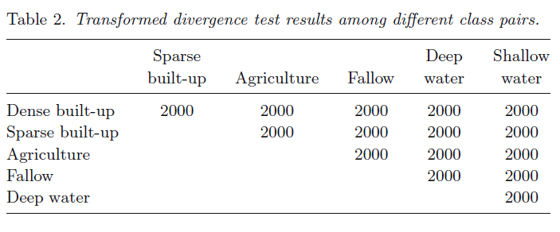
- Good separation among classes
- BUT ---
- Major overlap
- Shallow water & fallow class
- Some overlap
- Sparse & dense built-up classes
Decision tree
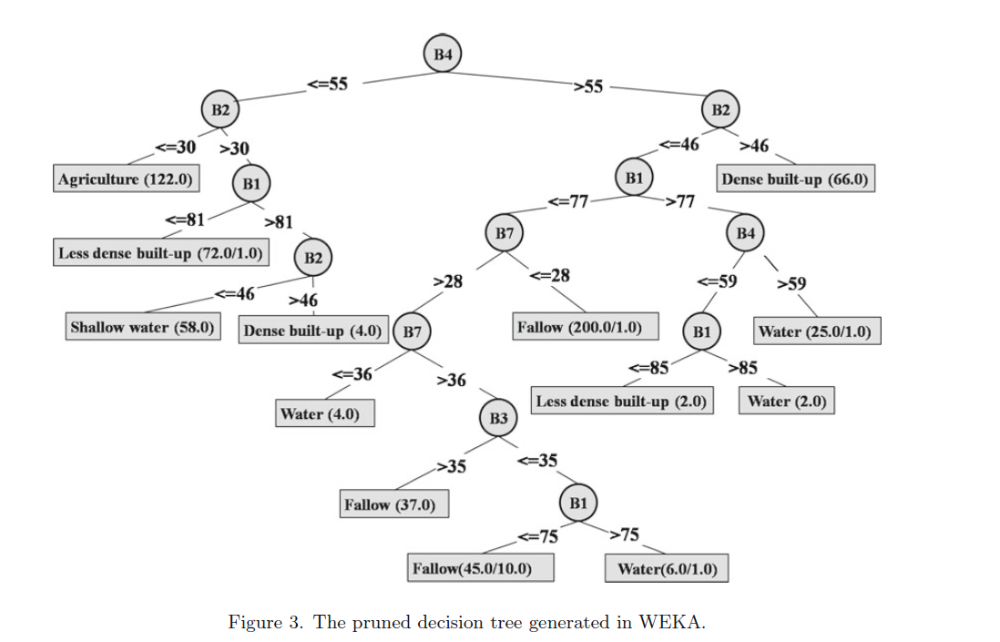
.
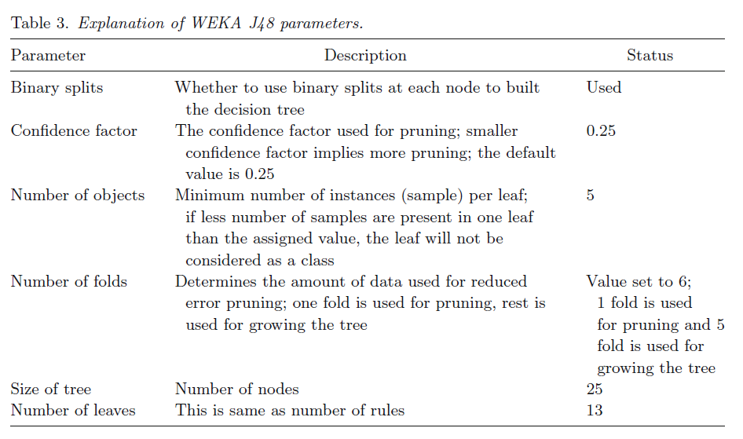
Evaluation of training sets
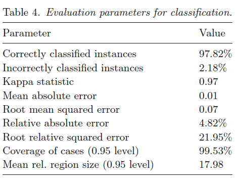
Classification results
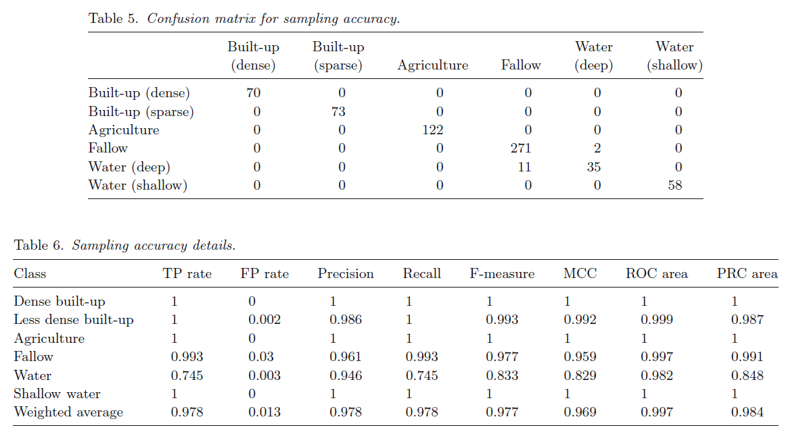
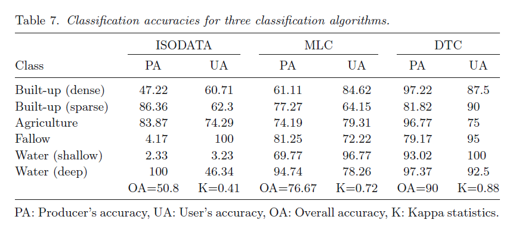
Accuracy Assessment:
- Confusion matrix >> overlaying reference locations on classified map
- DTC = 90% (overall accuracy)
- Kappa = 0.88
- Supervised classification= 76.67% (overall accuracy)
- Kappa = 0.7186
- ISODATA (Overall accuracy for classification) = 50 clusters = eight classes = 50.83% (overall accuracy)
- Kappa = 0.4134
- ISODATA (Classification accuracy)
- 2.33% (PA for shallow water) to 100% (PA for deep water and UA for fallow)
- MLC accuracy= 61.1% (PA for dense built-up) to 96.8% (UA for shallow water).
- DTC exhibit highest accuracy range
- 75% (UA for agriculture) to 100% (UA for shallow water)
Conclusion
- Strength of DTC = flexibility and simplicity
- for?
- Partitioning dataset
- Employs differentiation among the linear feature
- defining boundaries between classes
- Open source data mining software
- use = attributes of a pixel >> construct a decision tree
- WEKA Limitation
- handling large datasets = methodology implementation implemented = smaller area
- spatial resolution= not sufficient (analysisng finer details)
- Study= lacking ground data collection
Reflection
- The advantage in pre-process= comparatively less effort in data preparation
- Data: no normalization, no scaling, no effect of missing data on DT
- BUT: a small change in the data set would lead to a larger change in DT structure, as it is time consuming to train the model this small change can make the process tedious
- Should be comparatively easy to explain to stakeholders
- It would help fill the gap of cost of acquiring and collecting data, especially in countries that are not more economically developed/ emergent nations.
- Holloway et al. (2019)
- Key barriers to monitor SDG’s
- Cost of acquiring and collecting data
- Lack of infrastructure
- Required skills within countries and Organization
- Satellite Imagery= addresses the issue of cost of data acquisition
- Method contributing towards= SDG 15 (forest management), SDG 6 and SDG 2
- Missing and observed data across all images in the study: Output=
- Random Forest Method= more accurate
- Inverse distance weighted interpolation for predicting Foliage Projective Cover (FPC)= Lesser compared to RFM